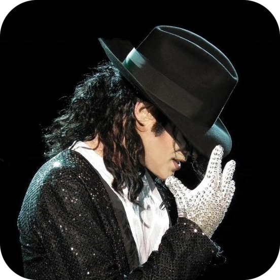
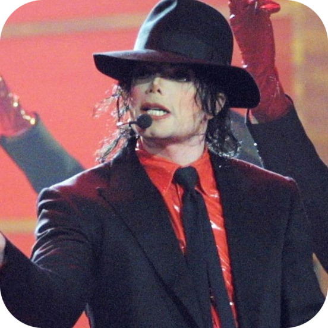
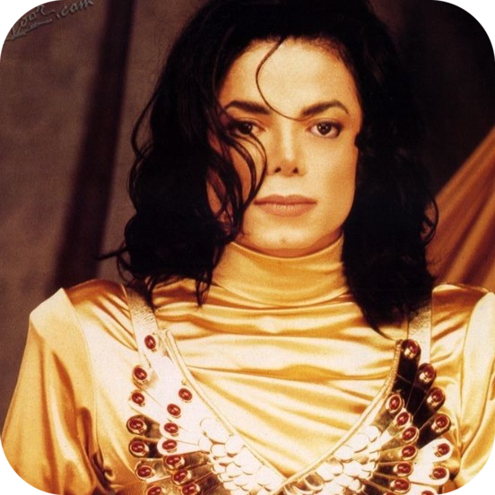
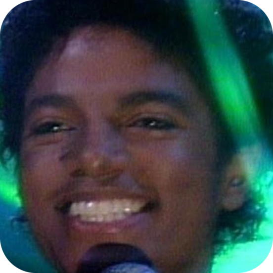
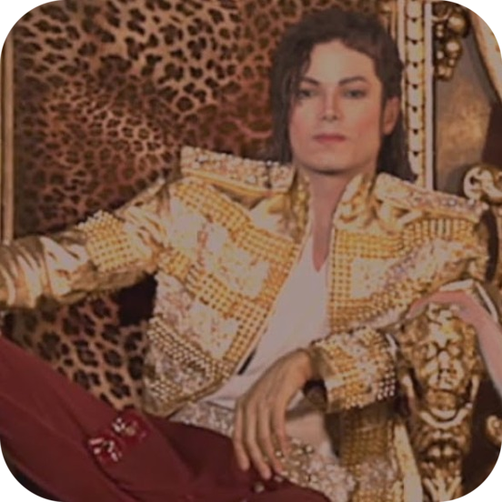
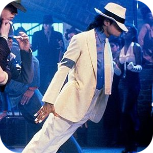
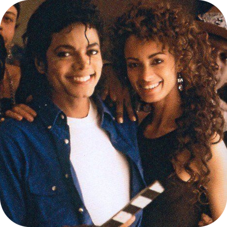
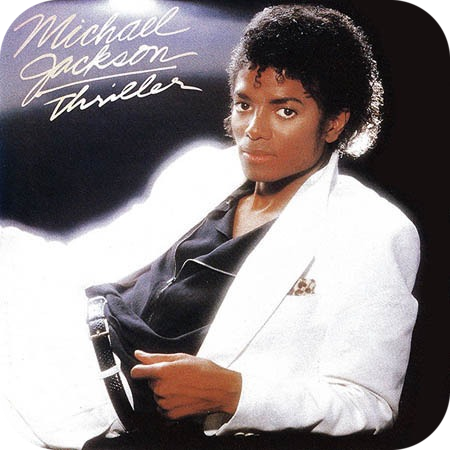
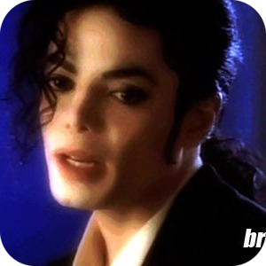

~TIMELINE OF JACKSON~
Birth
Nowadays
1958
1958
2021
KING OF POP
PERSONAL
TRIALS
DRAMA
DEATH
- Born Aug. 29 in Gary, Ind. He is the seventh child of Joseph and Katherine Esther Jackson.
- Early years. Childhood.
- Early years. Childhood.
- Early years. Childhood.
- Early years. Childhood.
- Early years. Childhood.
- Early years. Childhood.
- Early years. Childhood.
- Early years. Childhood.
- Early years. Childhood.
- Early years. Childhood.
-
In Los Angeles, the Jackson 5 debut as Motown’s newest act.
In December, the group’s single “I Want You Back” hits No. 1 on the Billboard Top 40 Chart. -
Jackson 5 hits “ABC, “The Love You Save” and “I’ll Be There” all reach No. 1 on Billboard charts.
- In May 1971, the Jackson family moved into a large house on a two-acre estate in Encino, California.[41] During this period, Michael developed from a child performer into a teen idol
- First No. 1 solo hit “Ben,” a song about a movie rat.
- Release of solo album "Music & Me"
- Introduces a dance step called the robot on “Soul Train.” The step sweeps the country.
- Release of solo album "Forever, Michael"
- Works on album "Shake Your Body (Down to the Ground)"
- Works on album "Shake Your Body (Down to the Ground)"
- Played “The Scarecrow” in the movie musical “The Wiz,” alongside Diana Ross, Richard Pryor and Nipsey Russell.
- Jackson’s “Off the Wall” solo album catapults him to superstar status.
- Albums "This Place Hotel" and "Can You Feel It" (1980)
- Jackson was the American Music Awards winner for Favorite Soul/R&B Album and Favorite Soul/R&B Male Artist.[62] Jackson felt Off the Wall should have made a bigger impact, and was determined to exceed expectations with his next release
- “Thriller” is released, eventually selling more than 100 million copies. It makes Jackson the biggest pop music star of the decade. The record becomes one of the best-selling albums of all time.
-
“Beat It” reaches No. 1 on the charts.
“Billie Jean” also becomes a gigantic hit, and the influential video, featuring more of Jackson’s electric dancing, remains a landmark.
“Motown 25: Yesterday, Today, Forever,” airs on NBC. After a memorable performance by “The Jacksons,” Michael wows the crowd with a rendition of “Billie Jean,” which included the jaw-dropping moonwalk.
The high-concept, 13-minute “Thriller” video, directed by John Landis, becomes a huge sensation. - Jackson’s hair catches on fire during filming of a Pepsi commercial.
- His charitable work continued with the release of "We Are the World" (1985), co-written with Lionel Richie, which raised money for the poor in the US and Africa.
- He diagnosed Jackson with lupus that year, and with vitiligo in 1986
- News reports say Jackson tries to buy the skeleton of the “Elephant Man.” The album “Bad” is released and sells more than 8 million copies.
-
Michael Jackson donates $125,000 from a concert at the Palace of Auburn Hills, Mich., and some personal memorabilia to start off a fundraising drive to preserve and improve the Motown Historical Museum.
Releases “Moonwalk,” an autobiography. - The Bad world tour ran from September 12, 1987, to January 14, 1989. In Japan, the tour had 14 sellouts and drew 570,000 people, nearly tripling the previous record for a single tour. The 504,000 people who attended seven sold-out shows at Wembley Stadium set a new Guinness World Record.
- the 1990 Grammy Award for Best Music Video, Short Form for "Leave Me Alone". Jackson won an Award of Achievement at the American Music Awards in 1989 after Bad generated five number-one singles, became the first album to top the charts in 25 countries and the best-selling album worldwide in 1987 and 1988.
- Releases “Dangerous” album, certified for 7 million in sales.
- At the end of 1992, Dangerous was the best-selling album of the year worldwide and "Black or White" the best-selling single of the year worldwide at the Billboard Music Awards. In the UK, "Heal the World" made No. 2 on the charts in 1992
-
In 1993, he performed "Remember the Time" at the Soul Train Music Awards in a chair, saying he twisted his ankle during dance rehearsals.
In his first TV interview in 14 years, Jackson tells Oprah Winfrey that the change in his skin complexion is from a disorder called vitiligo.
A lawsuit claims that Jackson seduced and abused a 13-year-old boy. -
Settles the lawsuit with substantial payment to the plaintiff. Los Angeles and Santa Barbara district attorneys don’t file child molestation charges against him.
Marries Lisa Marie Presley, daughter of Elvis Presley. - In June 1995, Jackson released the double album HIStory: Past, Present and Future, Book I. The first disc, HIStory Begins, is a greatest hits album
-
Presley files for divorce.
Jackson marries nurse Debbie Rowe. -
Rowe gives birth to son Prince Michael.
The Jackson 5 are inducted into the Rock and Roll Hall of Fame. - Rowe gives birth to daughter Paris Michael Katherine.
- In June 1999, Jackson joined Luciano Pavarotti for a War Child benefit concert in Modena, Italy. The show raised a million dollars for refugees of the Kosovo War, and additional funds for the children of Guatemala. Later that month, Jackson organized a series of "Michael Jackson & Friends" benefit concerts in Germany and Korea. Other artists involved included Slash, The Scorpions, Boyz II Men, Luther Vandross, Mariah Carey, A. R. Rahman, Prabhu Deva Sundaram, Shobana, Andrea Bocelli, and Luciano Pavarotti. The proceeds went to the Nelson Mandela Children's Fund, the Red Cross and UNESCO. From August 1999 to 2000, he lived in New York City at 4 East 74th Street. At the turn of the century, Jackson won an American Music Award as Artist of the 1980s. In 2000, Guinness World Records recognized him for supporting 39 charities, more than any other entertainer.
- In 2000, Guinness World Records recognized him for supporting 39 charities, more than any other entertainer
- The “Invincible” album is released with a respectable 2.1 million copies sold, but only two minor hits.
- Third child, Prince Michael II is born.
- Faces charges of child molestation. Posts $3 million in bail and throws up the “V” sign, while standing on a black Suburban, before leaving the courthouse in Santa Maria, Calif.
- Jackson pleads not guilty to child molestation charges in January.
- In June, Jackson was acquitted of child molestation charges.
-
In April 2006, Jackson agreed to use a piece of his ATV catalog stake, then worth about $1 billion, as collateral against his $270 million worth of loans from Bank of America.
In November 2006, Jackson invited an Access Hollywood camera crew into the studio in Westmeath, and MSNBC reported that he was working on a new album, produced by will.i.am - In September 2007, Jackson was still working on his next album, which he never completed
- For the 25th anniversary of Thriller in 2008, Jackson and Sony released Thriller 25, with two remixes released as singles: "The Girl Is Mine 2008" and "Wanna Be Startin' Somethin' 2008". For Jackson's 50th birthday, Sony BMG released a series of greatest hits albums, King of Pop, with different tracklists for different regions.
-
Announsed the last wourld tour "This Is It". Tickets for only 50 concert in London were sold by 2 weeks.
Passed away. - Still is a King of Music, style, kindness etc. Love him so much.
- Still is a King of Music, style, kindness etc. Love him so much.
- Still is a King of Music, style, kindness etc. Love him so much.
- Still is a King of Music, style, kindness etc. Love him so much.
- Still is a King of Music, style, kindness etc. Love him so much.
- Still is a King of Music, style, kindness etc. Love him so much.
- Still is a King of Music, style, kindness etc. Love him so much.
- Still is a King of Music, style, kindness etc. Love him so much.
- Still is a King of Music, style, kindness etc. Love him so much.
- Still is a King of Music, style, kindness etc. Love him so much.
- Still is a King of Music, style, kindness etc. Love him so much.
- Still is a King of Music, style, kindness etc. Love him so much.
BEST SONGS - click to listen to a part of MJ bests.

Billie Jean

Dangerous

Remember The Time

Rock With You

Slave To The Rhythm

Smooth Criminal

The Way You Make Me Feel

Thriller
